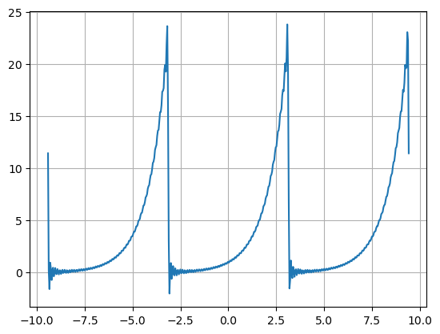
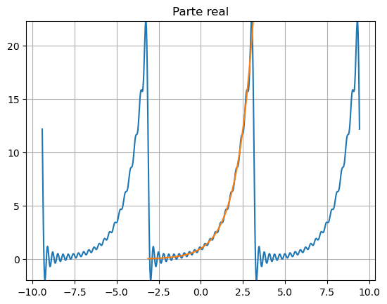
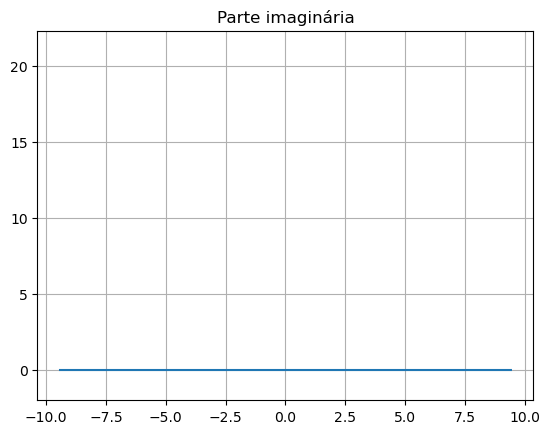

Série de fourier complexa#
Podemos usar a célula abaixo para criar séries com coeficientes \(a_n\) e \(b_n\). Use para testar os coeficientes que encontrou
import numpy as np
import matplotlib.pyplot as plt
#semi-período
L = np.pi
#número de exponenciais é 2num_termos +1
num_termos = 50
x = np.linspace(-3*L,3*L,500)
#y = np.heaviside(x,0)*(x-np.pi)**2/np.pi+np.heaviside(-x,0)*(x+np.pi)**2/np.pi
def cn(n):
value = np.sinh(np.pi)/np.pi*(-1)**n*(1+1j*n)/(1+n**2)
return value
def f(x, N):
fun=0*x
for n in range(-N,N+1):
fun = fun+cn(n)*np.exp(n*np.pi*x*1j/L)
return fun
y2 = np.real(f(x, num_termos))
#plt.plot(x, y)
plt.plot(x, y2)
plt.grid()
plt.show()

%%html
<iframe style="margin-top:0px;margin-left:-20px;" src="https://trinket.io/embed/python3" width="1200" height="600"></iframe>
Podemos usar a célula abaixo para plotar a expansão par e a expansão iímpar de uma série
import numpy as np
import matplotlib.pyplot as plt
#semi-período
L = np.pi
#número de cosenos e senos na série
num_termos = 20
x = np.linspace(-L,L,500)
y = np.exp(x)
xx = np.linspace(-3*L,3*L,1500)
def cn(n):
c = y*np.exp(-1j*n*np.pi*x/L)
return c.sum()/c.size
def f(x, N):
fun=0*x
for n in range(-N,N+1):
fun = fun+cn(n)*np.exp(n*np.pi*x*1j/L)
return fun
y2 = f(xx, num_termos)
y_r = np.real(y2)
plt.title('Parte real')
plt.grid()
plt.ylim((y_r.min(),y_r.max()))
plt.plot(xx, y_r)+plt.plot(x, y)
plt.show()
y_i = np.imag(y2)
plt.title('Parte imaginária')
plt.grid()
plt.ylim((y_r.min(),y_r.max()))
plt.plot(xx, y_i)
plt.show()


%%html
<iframe style="margin-top:0px;margin-left:-20px;" src="https://trinket.io/embed/python3" width="1200" height="600"></iframe>
Podemos usar a célula abaixo para comparar os coeficientes da série de Fourier com os coeficientes calculados
import numpy as np
#semi-período
L = 3
#número de cosenos e senos na série
num_termos = 20
x = np.linspace(-L,L,500)
y = 3*np.heaviside(x-1,0)-3*np.heaviside(x-L,0)
xx = np.linspace(-3*L,3*L,1500)
def cn(n):
c = y*np.exp(-1j*n*np.pi*x/L)
return c.sum()/c.size
def Cn(n):
value = 1/(n+1)
return value
for i in range(20):
print('C',i, "=", Cn(i), '?=?', cn(i),"=", 'c',i) # Série cossenos
#print('B',i, "=", Bn(i), '?=?', bn(i),"=", 'b',i) #Série senos
C 0 = 1.0 ?=? (1.002+0j) = c 0
C 1 = 0.5 ?=? (-0.41517149272830817-0.7156256334215648j) = c 1
C 2 = 0.3333333333333333 ?=? (-0.2038384857800134+0.35650588590460325j) = c 2
C 3 = 0.25 ?=? (-0.004000052851169841+2.5183772918467184e-05j) = c 3
C 4 = 0.2 ?=? (0.10567464275645819+0.17953633240109887j) = c 4
C 5 = 0.16666666666666666 ?=? (0.08004309709258174-0.14206058334959873j) = c 5
C 6 = 0.14285714285714285 ?=? (0.0040002114298212845-5.037153923453275e-05j) = c 6
C 7 = 0.125 ?=? (-0.061465391696214115-0.10293880914772904j) = c 7
C 8 = 0.1111111111111111 ?=? (-0.04909844076515652+0.08843727690227958j) = c 8
C 9 = 0.1 ?=? (-0.0040004758114079945+7.556729509065008e-05j) = c 9
C 10 = 0.09090909090909091 ?=? (0.043784855368949+0.07229054166771749j) = c 10
C 11 = 0.08333333333333333 ?=? (0.03503578175962772-0.06405425350154531j) = c 11
C 12 = 0.07692307692307693 ?=? (0.004000846121778977-0.00010077504212197752j) = c 12
C 13 = 0.07142857142857142 ?=? (-0.03426696673363169-0.055780564953825086j) = c 13
C 14 = 0.06666666666666667 ?=? (-0.027002444680977677+0.050114123682046596j) = c 14
C 15 = 0.0625 ?=? (-0.004001322537318149+0.00012599879021393435j) = c 15
C 16 = 0.058823529411764705 ?=? (0.028320209799134587+0.04545613634715771j) = c 16
C 17 = 0.05555555555555555 ?=? (0.021806467058394167-0.041088241887518424j) = c 17
C 18 = 0.05263157894736842 ?=? (0.004001905285141994-0.0001512425602713634j) = c 18
C 19 = 0.05 ?=? (-0.02425297404132462-0.038387296870860524j) = c 19
%%html
<iframe style="margin-top:0px;margin-left:-20px;" src="https://trinket.io/embed/python3" width="1200" height="600"></iframe>